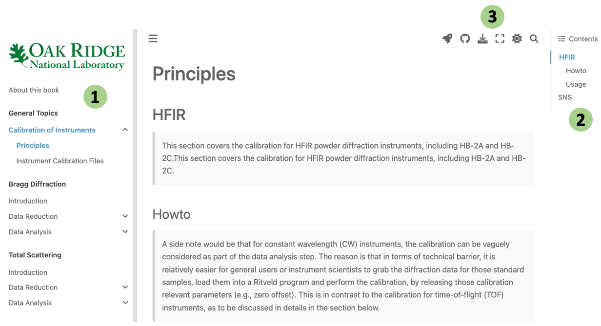
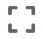

About this book#
This book was generated with the Jupyter book technology is for hosting the comprehensive introduction about the powder diffraction at ORNL. It covers a wide range from the underlying principles and tools available for data reduction, tutorials & demonstration for performing data reduction, to useful information and necessary input files from instruments for performing the powder diffraction data analysis.
With the Jupyter book technology, the book could be generated from simple markdown (a simple language for generating HTML-like formatted web contents) files, and more interestingly (and importantly), from Jupyter notebooks. With Jupyter notebooks, the generated web page can be made interactive so that one does not have to leave the page to execute a certain snippet of codes. Such a binding technology makes the book both knowledge and interactivity oriented, so that readers can read about the contents and play around with the underlying operations, at the same time and in the same scope.
How to use this book#

This book is just a normal web page on the users end and viewing the contents of the book is of no difference as compared to viewing any static website. As presented in the image above, #1 on the left hand side of the page is the table of contents of the book and one can use it for quickly navigating across the book. #2 on the right hand side is the contents structure of the current page. #3 on the top of all pages in the book hosts some useful operations of the book, as detailed below,
If the page was generated from a Jupyter notebook, this button will appear so that one can launch the notebook interactively. There are multiple options to launch the notebook interactively, as one will find by hovering the mouse over the icon – Binderhub, powder Jupyterhub server, Google Colab, or more interestingly, Live Code mode where users can execute interactive codes without leaving the page (this is realized via connection to Binderhub service).
The book contents are hosted on GitHub and with this button, one can get access, make contribution, or submit issues to our GitHub repo.
Download the current page as markdown file (.md), Jupyter notebook (.ipynb), or a PDF file (.pdf). Either .md or .ipynb option will appear if the page was generated from a markdown file or Jupyter notebook, respectively.
 This button is for viewing the website in full screen mode.
This is for controlling the view mode of the website – dark or light mode according to users’ preference.
An embedded search engine for quickly searching over the contents of the book.
To demonstrate the interaction with the book, we include the following the same piece of demo code as given in the Jupyter book documentation. To execute the code below, one needs to click on -> Live Code button at top of the web page. The web host will then set up the live environment through Binderhub connection, which may take ~1 minute. When the environment is ready, you should be able to see Launching from mybinder.org: ready at the top of the web page. Then click on the code snippet as below and press [Shift]+[Enter] to execute the code. Or, one can use the run, restart, and restart & run all buttons in the interactive cell (once the Live Code environment is ready, you will be able to see those buttons) to interact with the codes. One can also make changes to the code and execute again – basically, this is a mini environment for executing small pieces of codes interactively.
import numpy as np
import matplotlib.pyplot as plt
plt.ion()
x = np.arange(500)
y = np.random.randn(500)
fig, ax = plt.subplots()
ax.scatter(x, y, c=y, s=x)
---------------------------------------------------------------------------
ModuleNotFoundError Traceback (most recent call last)
/var/folders/hl/07p51rnx1kb19p3flv_hzrxr2c0yrm/T/ipykernel_24512/472126340.py in <module>
----> 1 import numpy as np
2 import matplotlib.pyplot as plt
3 plt.ion()
4
5 x = np.arange(500)
ModuleNotFoundError: No module named 'numpy'
To demonstrate the interaction with the book via various ways, we include a demo GIF as presented below,